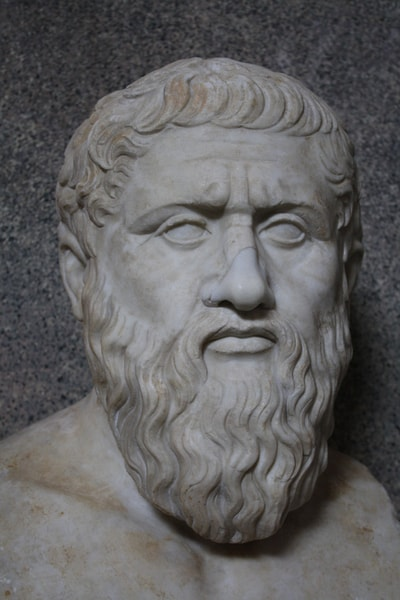

Anaxagoras (c. 500-428 BC)

Anaxagoras (c. 500 - 428 BCE) was an ancient Greek philosopher born in Clazomenae, a city on the coast of Asia Minor, which was under Persian rule during his lifetime. He later moved to Athens, where he became known for his ideas about the universe and natural phenomena. As one of the Pre-Socratic philosophers, Anaxagoras tried to explain how the world worked through reason and observation rather than relying entirely on traditional myths.
One of his most important ideas was the concept of Nous, a Greek word meaning "Mind" or "Intellect." Anaxagoras believed that Nous was a powerful ordering force that set the universe in motion and organised its contents. He developed this idea partly in response to earlier philosophers who questioned how change could occur. According to Anaxagoras, everything contained portions of many different substances, and the processes of mixing and separation helped explain the changes seen in nature.
Anaxagoras was also interested in astronomy and attempted to explain celestial events scientifically. He correctly understood that solar and lunar eclipses had natural causes, rather than being supernatural signs. He described the Sun as a huge, fiery mass of material and suggested that it was much larger than people might imagine. He also explored the causes of meteors and rainbows, seeking explanations based on physical processes.
His ideas about the origins of life were equally unusual for his time. Anaxagoras proposed that the ingredients necessary for life existed throughout the universe and could be present in many different places. This idea is sometimes compared with the concept of panspermia, although his ancient theory was not identical to the modern scientific hypothesis. He also considered the possibility that the Sun was similar to other stars, an idea that challenged traditional views of the heavens.
Despite his intellectual influence, Anaxagoras eventually faced accusations of impiety, meaning that his beliefs were considered disrespectful toward the gods or traditional religious practices. He left Athens and spent the final part of his life in Lampsacus, a city in Asia Minor.
Anaxagoras helped advance Greek philosophy by encouraging people to investigate the universe through observation and rational explanation. His ideas about the cosmic Mind, astronomy, and the natural causes of celestial events influenced later discussions about the structure of reality and humanity's place in the universe.